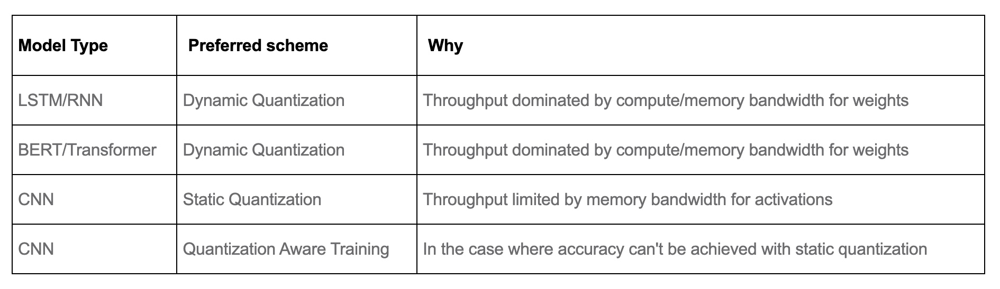

Primers • Model Compression using Inference/Training Optimizations
- Background
- Quantization
- Knowledge distillation
- Pruning
- DeepSpeed and ZeRO-Offload
- Conclusion
- Mixed Precision Training
- Aside: Inference optimizations
- On-Device Privacy
- Differential Privacy
- Federated Learning
- Low-rank decomposition
- Further Reading
- References
- Citation
Background
- This article covers model inference/training optimization or compression concepts using topics such as model quantization/binarization, pruning, knowledge distillation, mixed precision training, and quantization aware training.
- Each year, larger and larger models are able to find methods for extracting signal from the noise in machine learning. With the exponential increase in the parameter count of models, the computational requirements have also been blowing up exponentially (in both runtime and memory), which can be both costly when served out to customers or too slow or large to function in edge environments like a phone.
- Researchers and practitioners have come up with many methods for optimizing neural networks to run faster or with less memory usage, enabling models to run efficiently on device (also called edge AI). This article covers some of the state-of-the-art methods to edge AI.
- The image below, (source), does a great job illustrating some of the methods we will see further in the article.
Quantization
Background: Precision
- Before we talk about quantization, let’s learn about precision. From NVIDIA Blog: What’s the Difference Between Single-, Double-, Multi- and Mixed-Precision Computing?, per the IEEE 754 floating point specification, double-precision format uses 64 bits, single-precision format uses 32 bits, while half-precision is 16 bits.
Definition
-
Quantization generally refers to taking a model with parameters (weights, in all cases and activations, in most cases) trained at high precision (32 or 64 bits) and reducing the number of bits that each weight takes (for example down to 16, 8, or even fewer). In practice, this usually leads to a speedup of 2-4x (highest for nets with convolutions, based on experience).
-
Model quantization reduces the precision of parameters, usually converting from 32-bit float to 8-bit integer representations. This achieves around 4x model compression. However, lower precision can cause the model to diverge from its original converged state. To address this, “quantization aware training” fine-tunes the model after quantization on additional data to regain performance. “Post training quantization” skips this fine-tuning step and instead applies heuristics to alter the quantized weights directly to try preserving model accuracy. In both cases, the goal of quantization is to dramatically shrink model size with minimal impact on model predictions. The fine-tuning counteracts the performance drops typical of reduced precision, making quantization a valuable model optimization.
-
Why does this work? It turns out that for deep networks to work, we don’t need highly precise values for the network’s weights. With proper hardware support, processing deep learning kernels (a fancy term for mathematical operations) using fewer bits can be faster and more memory efficient simply because there’s fewer bits to compute (
torch.qint8is 8 bits, andtorch.float32is 32 bits, so 4x smaller).
Downsides: Depending on the level of quantization attempted, you might find that an operation you want (for example, a particular convolutional op or even something as simple as transpose) might not be implemented. Of course, as with all methods, you might also find that accuracy drops off too much to be useful.
- From the TensorFlow docs:
We generally recommend 16-bit floats for GPU acceleration and 8-bit integer for CPU execution.
Quantization with PyTorch
- PyTorch has support for special quantized tensors, which in their case corresponds to storing data in 8 or 16 bits. It’s important to understand one specific detail about how this works. If your network has a special structure that means that at some point all of the outputs are between
0and1(e.g., from a sigmoid), then you might be able to choose a better, more specific quantization. This means that quantization needs to collect some data about how your network runs on representative inputs. In particular, most quantization happens via a method likeround(x * scalar), wherescalaris a learned parameter (akin to BatchNorm).
Support for some of these operations are in libraries that are “external” to PyTorch (but loaded as required). Think of this like BLAS or MKL for quantized operations. FBGEMM is an implementation for servers, and QNNPACK is an implementation for mobile devices (now inside PyTorch proper).
- Quantization occasionally has gotchas - accumulating in higher precision data types is often more stable than using lower precision values, especially if the input data has deep levels of an exponent. Picking the right precision for each operation can be nonobvious, so PyTorch has a
torch.cuda.amppackage to help you automatically cast different parts of your network to half precision (torch.float16) where it’s possible. If you want to do this manually, there’s some helpful tips on PyTorch: Automated Mixed Precision page.
One of the very first things you can try is to take your existing model that’s all
torch.float32, and run it usingtorch.cuda.ampand see if it still runs with accuracy. Half precision support is still relatively sparse in consumer GPUs, but it works on the very common V100/P100/A100.
-
If you want more control or want to deploy to a non-CUDA environment, there are three levels of manual quantization (under the label “eager mode quantization”) that you can try, depending on why you’re trying to quantize and how much you’re willing to sweat:
- Dynamic quantization: weights quantized with activations read/stored in floating point and quantized for compute
- Static quantization: weights quantized, activations quantized, calibration required post training
- Static quantization-aware training: weights quantized, activations quantized, quantization numerics modeled during training
-
Please see PyTorch: Introduction to Quantization on Pytorch blog post for a more comprehensive overview of the tradeoffs between these quantization types.
Note that layer/operator coverage (Linear/Conv/RNN/LSTM/GRU/Attention) varies between dynamic and static quantization and is captured in the table below. Note that for FX quantization, the corresponding functionals are also supported.
Dynamic/Runtime Quantization
- The easiest method of quantization PyTorch supports is called dynamic quantization. This involves not just converting the weights to
int8- as happens in all quantization variants - but also converting the activations toint8on the fly, just before doing the computation (hence “dynamic”). The computations will thus be performed using efficientint8matrix multiplication and convolution implementations, resulting in faster compute. However, the activations are read and written to memory in floating point format. - In other words, we store the weights of the network in the specified quantization, and then at runtime, activations are dynamically converted to the quantized format, combined with the (quantized) weights, then written in memory at full precision. Then the next layer quantizes those, combines with the next quantized weights, and so on. Why does this happen? My understanding is that
scalarcan be dynamically determined from the data, which means this is a data-free method. - How do we do this in PyTorch? PyTorch offers have a simple API for dynamic quantization in PyTorch.
torch.quantization.quantize_dynamictakes in a model, as well as a couple other arguments, and produces a quantized model! Check out this end-to-end tutorial illustrates this for a BERT model. As an example:
# quantize the LSTM and Linear parts of our network
# and use the torch.qint8 type to quantize
quantized_model = torch.quantization.quantize_dynamic(
model, {nn.LSTM, nn.Linear}, dtype=torch.qint8
)
- There are many more knobs you can turn to make this better for your model. See more details in this blog post.
- See the documentation for the function here an end-to-end example in our tutorials here and here.
Post-Training Static Quantization
- Runtime conversion to a full precision type and back is expensive. We can avoid that if we know what the distribution of activations will be, by say, recording real data flowing through the network.
- One can further improve the performance (latency) by converting networks to use both integer arithmetic and int8 memory accesses. Static quantization performs the additional step of first feeding batches of data through the network and computing the resulting distributions of the different activations (specifically, this is done by inserting “observer” modules at different points that record these distributions). This information is used to determine how specifically the different activations should be quantized at inference time (a simple technique would be to simply divide the entire range of activations into 256 levels, but we support more sophisticated methods as well).
- Importantly, this additional step allows us to pass quantized values between operations instead of converting these values to floats - and then back to ints - between every operation, resulting in a significant speed-up.
-
The following features are supported that allow users to optimize their static quantization:
- Observers: you can customize observer modules which specify how statistics are collected prior to quantization to try out more advanced methods to quantize your data.
- Observers are inserted using
torch.quantization.prepare.
- Observers are inserted using
- Operator fusion: When you have access to data flowing through your network, PyTorch can also inspect your model and implement extra optimizations such as quantized operator fusion. You can fuse multiple operations into a single operation, saving on memory access while also improving the operation’s numerical accuracy.
- To fuse modules, use
torch.quantization.fuse_modules.
- To fuse modules, use
- Per-channel quantization: we can independently quantize weights for each output channel in a convolution/linear layer, which can lead to higher accuracy with almost the same speed.
- Quantization itself is done using
torch.quantization.convert.
- Quantization itself is done using
- Observers: you can customize observer modules which specify how statistics are collected prior to quantization to try out more advanced methods to quantize your data.
- Here’s an example of setting up the observers, running it with some data, and then exporting to a new statically quantized model:
# this is a default quantization config for mobile-based inference (ARM)
model.qconfig = torch.quantization.get_default_qconfig('qnnpack')
# or set quantization config for server (x86)
# model.qconfig = torch.quantization.get_default_config('fbgemm')
# this chain (conv + batchnorm + relu) is one of a few sequences
# that are supported by the model fuser
model_fused = torch.quantization.fuse_modules(model, [['conv', 'bn', 'relu']])
# insert observers
model_with_observers = torch.quantization.prepare(model_fused)
# calibrate the model and collect statistics
model_with_observers(example_batch)
# convert to quantized version
quantized_model = torch.quantization.convert(model_with_observers)
Static Quantization-aware Training (QAT)
- Quantization-aware training (QAT) is the third method, and the one that typically results in highest accuracy of these three. With QAT, all weights and activations are “fake quantized” during both the forward and backward passes of training: that is, float values are rounded to mimic int8 values, but all computations are still done with floating point numbers. Thus, all the weight adjustments during training are made while “aware” of the fact that the model will ultimately be quantized; after quantizing, therefore, this method usually yields higher accuracy than the other two methods.
- Put simply, if you tell the training method some fact about how the network is used, the network will adapt to this information. How does this work? During the forward and backward passes, the model’s activations are rounded to the picked quantization. This means the model gets gradients based on rounded values, which means it “adjusts” to its limited capacity.
Very importantly, however, the actual backprop (i.e., the gradient descent of the weights) happens in full precision.
-
torch.quantization.prepare_qatinserts fake quantization modules to model quantization. Mimicking the static quantization API,torch.quantization.convertactually quantizes the model once training is complete. -
For example, in the end-to-end example, we load in a pre-trained model as
qat_model, then we simply perform quantization-aware training using:
# specify quantization config for QAT
qat_model.qconfig=torch.quantization.get_default_qat_qconfig('fbgemm')
# prepare QAT
torch.quantization.prepare_qat(qat_model, inplace=True)
# convert to quantized version, removing dropout, to check for accuracy on each
epochquantized_model=torch.quantization.convert(qat_model.eval(), inplace=False)
- Note: see the helpful tips under “Model Preparation for Quantization” here before using PyTorch quantization.
Device and Operator Support
-
Quantization support is restricted to a subset of available operators, depending on the method being used, for a list of supported operators, please see the documentation at here.
-
The set of available operators and the quantization numerics also depend on the backend being used to run quantized models. Currently quantized operators are supported only for CPU inference in the following backends: x86 and ARM. Both the quantization configuration (how tensors should be quantized and the quantized kernels (arithmetic with quantized tensors) are backend dependent. One can specify the backend by doing:
import torchbackend='fbgemm'
# 'fbgemm' for server, 'qnnpack' for mobile
my_model.qconfig = torch.quantization.get_default_qconfig(backend)
# prepare and convert model
# Set the backend on which the quantized kernels need to be run
torch.backends.quantized.engine=backend
- However, quantization aware training occurs in full floating point and can run on either GPU or CPU. Quantization aware training is typically only used in CNN models when post training static or dynamic quantization doesn’t yield sufficient accuracy. This can occur with models that are highly optimized to achieve small size (such as Mobilenet).
Integration in torchvision
-
PyTorch has also enabled quantization for some of the most popular models in torchvision: Googlenet, Inception, Resnet, ResNeXt, Mobilenet and Shufflenet. We have upstreamed these changes to torchvision in three forms:
- Pre-trained quantized weights so that you can use them right away.
- Quantization ready model definitions so that you can do post-training quantization or quantization aware training.
- A script for doing quantization aware training — which is available for any of these model though, as you will learn below, we only found it necessary for achieving accuracy with Mobilenet.
- We also have a tutorial showing how you can do transfer learning with quantization using one of the torchvision models.
Choosing an approach
-
The choice of which scheme to use depends on multiple factors:
- Model/Target requirements: Some models might be sensitive to quantization, requiring quantization aware training.
- Operator/Backend support: Some backends require fully quantized operators.
-
Currently, operator coverage in PyTorch is limited and may restrict the choices listed in the table below. The table below from PyTorch: Introduction to Quantization on PyTorch provides a guideline.

Performance Results
- Quantization provides a 4x reduction in the model size and a speedup of 2x to 3x compared to floating point implementations depending on the hardware platform and the model being benchmarked. The table below from PyTorch: Introduction to Quantization on PyTorch offers some sample results:
Accuracy results
- The tables below from PyTorch: Introduction to Quantization on PyTorch compares the accuracy of static quantized models with the floating point models on Imagenet. For dynamic quantization, we compared the F1 score of BERT on the GLUE benchmark for MRPC.
Computer Vision Model accuracy
Speech and NLP Model accuracy
Conclusion
- To get started on quantizing your models in PyTorch, start with the tutorials on the PyTorch website.
- If you are working with sequence data, start with…
- If you are working with image data then we recommend starting with the transfer learning with quantization tutorial. Then you can explore static post training quantization.
- If you find that the accuracy drop with post training quantization is too high, then try quantization aware training.
Quantization in other frameworks: TensorFlow and CoreML
-
PyTorch-based quantization might not necessarily work in other production environments. In particular, when converting to Apple’s CoreML format, you need to just use their quantization (which might be limited to just 16-bit quantization). When using edge devices, be careful to check that quantization is possible (in Apple’s case the hardware is already computing everything in
fp16on GPU, so you only save possibly the memory of the network’s weights). -
TensorFlow has a similar set of steps as above, though the examples are focused on TFLite. Essentially, static and dynamic quantization are explained in the Post-training quantization page, and there’s a QAT page. The tradeoffs appear to be very similar, though there’s always some feature mismatch between PyTorch and TF.
How far can we go?
- Apparently down to 1 bit! There have been several attempts over the years to create binary neural networks if you want the most extreme version of the accuracy vs speed tradeoff. For the most part, these are still research projects rather than usable ideas, though XNOR-Net++ seems to have been implemented in PyTorch.
Use-case
- Quantization’s goal is to increase inference speed. (In contrast, as we’ll see in the section on Mixed Precision Training, Automatic Mixed Precision (AMP)’s main goal is to reduce training time.)
Further Reading
- PyTorch official documentation: Introduction to Quantization on PyTorch
- PyTorch official documentation: Advanced Quantization in PyTorch
- PyTorch official documentation: Quantization
- CoreML Tools documentation: Quantization
Knowledge distillation
- Knowledge distillation is a technique in machine learning used to compress the knowledge of a large and complex model (teacher) into a smaller, more efficient model (student). This process is particularly valuable in deploying high-performing AI models to environments with limited computational resources, like mobile devices or embedded systems.
- The paper “Distilling the Knowledge in a Neural Network” by Geoffrey Hinton et al. presents knowledge distillation as a method to transfer knowledge from a large, complex model (teacher) to a smaller, more efficient model (student). Key points include:
- Distillation Method: The student model is trained using ‘soft targets’ generated by the teacher model. These soft targets are the class probabilities produced by the teacher, providing richer information than hard targets (actual labels).
- Loss Function: The training uses a loss function combining the cross-entropy with soft targets (from the teacher model) and cross-entropy with correct labels. This function also accounts for temperature adjustments in softmax layers, ensuring the student model learns both the general structure and detailed information from the teacher.
- Empirical Results: Experiments demonstrate that knowledge distillation allows the student model to closely mimic the teacher’s performance, even with significantly fewer parameters. The approach is shown effective in various applications, including speech recognition and image classification.
- Theoretical Insights: The paper explores the rationale behind distillation, suggesting it’s akin to a form of data augmentation, where the student model gains insights from the teacher’s outputs.
- This approach provides a means to deploy powerful models in resource-constrained environments by distilling knowledge into more compact forms without significant loss of accuracy.
- The image below (source: AiEdge.io), does a great job at illustrating this concept.
Student model’s loss function
- In knowledge distillation, the loss function of the student model combines two types of cross-entropy: one with soft targets from the teacher model, and another with the correct labels (hard targets).
- Soft targets are the output probabilities from the teacher model, which provide a richer training signal than hard targets. The function includes temperature adjustments in the softmax layers, which helps in softening the probabilities.
- This approach enables the student model to learn not just the final output (as indicated by the hard targets) but also the nuances and general structure of the knowledge represented by the teacher model’s softened outputs.
- The loss function for the student model in knowledge distillation is typically a combination of two components:
- Cross-Entropy with Soft Targets: This part involves the Kullback–Leibler (KL) divergence between the softened outputs of the teacher model and the student model. Soft targets are obtained by applying a temperature \(T\) to the softmax function in the teacher model. The higher the temperature, the softer the probability distribution, providing more information per training case than hard targets.
- Cross-Entropy with Correct Labels: This is the traditional cross-entropy loss between the student’s predictions and the actual hard targets (correct labels).
- The total loss function is often a weighted sum of these two components, with a temperature factor \(T\) applied to both terms to control the importance of each component. This dual approach allows the student model to learn detailed information from the teacher model’s predictions (soft targets) while still being anchored to the true labels (hard targets).
- The student model’s loss function in knowledge distillation generally takes the following form:
- Temperature (T): This is a scaling factor applied to the softmax function in both the teacher and student models. A higher temperature results in softer probability distributions, making the outputs less confident and more informative. The factor ( T^2 ) is included when computing the KL divergence component to maintain the gradients’ scale, as the gradients produced by the softened outputs are scaled down by a factor of ( T ).
- In the context of knowledge distillation, “temperature” refers to a hyperparameter used in the softmax function during the training process. The softmax function typically outputs probabilities associated with each class in a classification task. By adjusting the temperature, the softmax function can produce a softer probability distribution over the classes. A higher temperature leads to probabilities that are more evenly distributed (softer), providing more information about the relative probabilities of incorrect classes, which is useful for training the student model. Conversely, a lower temperature makes the distribution sharper, closer to hard, one-hot encoded labels. This technique helps in transferring nuanced information from the teacher model to the student model.
- This loss function helps the student model learn both the specific (hard targets) and general (soft targets) aspects of the problem, balancing between mimicking the teacher’s behavior and achieving correct predictions on its own.
- The image below (source) gives a great visual representation of this:
Stochastically, two models can never be the same, so how do we handle that in student/teacher distillation
- In knowledge distillation, the goal is not to make the student model identical to the teacher model, but rather to transfer as much useful knowledge as possible.
- Given the inherent differences in model architecture and capacity, the student model won’t replicate the teacher model exactly.
- Instead, the focus is on ensuring the student model learns the underlying patterns and generalizations that the teacher model has learned.
- The distillation process, especially through the use of softened outputs (soft targets) and a carefully designed loss function, helps in achieving this goal by guiding the student model to approximate the teacher’s decision boundaries and outputs as closely as possible within its capacity constraints.
Distillation in practice
- The typical implementation of knowledge distillation involves several key steps:
- Teacher Model Training: A large, complex model is trained on a dataset to achieve high accuracy. This model serves as the ‘teacher’.
- Student Model Training: The student model, which is smaller and less complex, is then trained not only on the original dataset but also on the outputs of the teacher model. The goal is for the student to mimic the teacher’s predictions.
- Loss Function: The loss function in knowledge distillation often combines traditional loss (like cross-entropy with the true labels) and a distillation loss, which measures how closely the student’s outputs match the teacher’s.
Distillation as semi-supervised learning
- Knowledge distillation can be leveraged as a form of semi-supervised learning. This involves initially training a large, powerful teacher model on a limited set of labeled data. The teacher model then generates labels for a much larger set of unlabeled data. This expanded dataset, comprising both manually labeled and teacher-generated labels, is used to train a smaller, more efficient student model.
- You can train a teacher model, which is a much more powerful model than the student, with a small set of labeled data. Next, use the teacher to automatically label unannotated data, which can be used to train a leaner, more efficient “student” network.
- For e.g., Lessons from building acoustic models with a million hours of speech by Parthasarathi and Strom (2019), used a small set of annotated data (green) to train a powerful but impractically slow “teacher” network to convert frequency-level descriptions of audio data into sequences of phones. The teacher, in turn, labeled a much larger set of unannotated data (red). They then used both datasets to train a leaner, more efficient “student” model.
Pruning
-
Pruning is removing some weights (i.e., connections) or entire neurons from a neural network after or during training. In practice, we can often remove 90% of the parameters in large deep neural networks without significantly affecting model performance.
- Model pruning ultimately looks to remove unimportant weights from the network by learning which weights are actually important. Common techniques for neural network pruning involve analyzing the effect each weight has on the overall loss function. The gradient and second derivative of the loss with respect to each weight gives a sense of impact. Regularization methods like L1 and L2 that drive small magnitude weights to zero are also useful. More advanced “structured pruning” removes entire neurons, layers, or filters based on their cumulative impact, giving better optimization for inference speed. The goal of all these pruning approaches is to reduce redundant or non-essential parts of the model without significantly hurting loss function performance. This results in a slimmer, more efficient model.
- The identification of weights with minimal impact in a neural network during pruning is typically based on certain criteria, such as the magnitude of the weights. Weights with smaller absolute values are often considered less important and are more likely to be pruned. The underlying assumption is that smaller weights contribute less to the output of the network. In some approaches, the importance of weights can also be evaluated based on other criteria, like their effect on the loss function. The selected weights are then either set to zero or entirely removed from the network.
- Pruning can be done at 3 stages:
- Early in Training:
- Lottery Ticket Hypothesis: Involves identifying and retaining a subset of the network’s weights early in training.
- Mid-Training:
- Iterative Pruning: Repeatedly trains, prunes, and fine-tunes the network part-way through training.
- After Full Training:
- Magnitude-based Pruning: Removes weights with the smallest magnitudes after full training.
- L1/L2 Norm-based Pruning: Prunes based on the L1/L2 norm of the weights.
- Early in Training:
- Why does this work? Let’s imagine that your model is a fully connected neural network with just one hidden layer, such that the input is size 1024, the hidden size is 100, and the output is 20 dimensions. Then the number of parameters (without bias) is 104400. If there’s a neuron in the hidden layer that never fires (or is ignored downstream) then removing it from the network saves 1044 parameters. Why not just train the smaller network right away? The most compelling explanation is something called the lottery ticket hypothesis:
Any large network that trains successfully contains a subnetwork that is initialized such that - when trained in isolation - it can match the accuracy of the original network in at most the same number of training iterations.
Structured vs. Unstructured pruning
-
Removing neurons or choosing a subnetwork is what people consider structured pruning. However, a lot of methods (including TensorFlow’s
tensorflow_model_optimizationtoolkit at this time and PyTorch’storch.nn.utils.prune) are focused on sparsifying model weights so that they are more compressible (usually called unstructured pruning). This means the matrices are the same size, but some values are set to 0. This can save disk space using compression algorithms (such as run-length encoding or byte-pair encoding). When sparse model support fully lands in the various frameworks (i.e., you can multiply a sparse vector and a sparse matrix faster than the dense ones) you might be able to speed up inference as well. -
For that reason, unstructured pruning (currently) doesn’t seem that useful, but essentially you can prune during or after training, and you pick a certain target sparsity (e.g., 80% of the weights of your network will be zeroed out). However, there’s a lot of confusion in this area which makes it hard to recommend anything. TensorFlow has a a few guides on pruning both during and after training and PyTorch has a tutorial on pruning using some set of heuristics after training.
-
In the space of structured pruning, there’s still active research and no clear API. We can pick a metric to compute a relevance score for each neuron, and then remove the ones that have the least information content. Metrics that might be useful here are the Shapley value, a Taylor approximation of the loss functions sensitivity to a neuron’s activation, or even a random neuron. Before you begin, check out PyTorch: Pruning Tutorial. The TorchPruner library implements some of these automatically for
nn.Linearand convolutions (nn.Conv1D, nn.Conv2D, etc) modules. Another library Torch-Pruning has support for a few more operations. One of the most well-known older works in this area prunes filters from a convnet using the L1 norm of the filter’s weights. However, this is still an active area of research.
Fine tuning
- It’s standard practice to retrain the network after applying the pruning. Currently, the best method is basically to reset the learning rate (learning rate rewinding) and start retraining the network. If you’d like, you can use weight rewinding, which is resetting the weights for the unpruned parts of the network to their value earlier in training (e.g., 1/3 trained weights). My intuition on this is that it’s essentially training the lottery ticket subnetwork now that we’ve identified it.
- Pruning removes weights or neurons, which can disrupt the learned patterns and the overall balance of the network. Without retraining, the network might not be able to compensate for the loss of these components, leading to a decrease in accuracy or effectiveness in performing its tasks. Essentially, the network would be operating with an architecture that it wasn’t trained to optimize, resulting in suboptimal performance.
Overall, a practitioner who is really interested in trying this should start with TorchPruner or Torch-Pruning and then try fine tuning the resulting network with learning rate rewinding. However, for most architectures (including ResNets because of skip connections) it’ll be pretty non-obvious how to trim the rest of the network around this.
DeepSpeed and ZeRO-Offload
- Essentially, DeepSpeed is a library that helps train large to extremely large models (e.g., 1bn+ parameters) faster and using less GPU memory. This works by exploiting smart parallelism and better caching. It comes in the form of an extension to PyTorch.
Conclusion
-
Deep learning researchers have spent a lot of time distilling large models using model-specific methods, and if you need to gain some performance, you might be able to find a pre-trained distilled version of the large model you’re currently using. For example, in NLP, HuggingFace makes it easy to access both DistilBert and TinyBert. In computer vision, Facebook Research’s d2go has a bunch of pretrained mobile-ready models, and they’ve specialized some distillation methods in DeiT.
-
Well-Read Students Learn Better: On the Importance of Pre-training Compact Models makes a recommendation (with high quality ablation experiments) that for training BERT architectures, the best approach is:
- Pre-train a compact model architecture on the masked language model (MLM) objective developed by the original BERT papers (Devlin et al., 2018).
- Take a large task-specific teacher model (e.g., if the task is NLI, the output is a distribution over the 3 classes (entailment, contradiction, neutral)), and perform basic response-based offline distillation on the pre-trained compact model from step 1.
- Finally, if required, fine-tune the compact model from step 2 on the task-specific data (e.g., if the task is NER, train over the CoNLL 2003 dataset).
-
One of the best advantages of this method (which they call Pre-trained Distillation (PD)) is that it’s architecture-agnostic. If you are going to use a compact NLP model in practice, it’s worth skimming the paper, especially section 6.
Mixed Precision Training
Overview
- Mixed precision is a technique for substantially reducing neural net training time by performing as many operations as possible in half-precision floating point,
float16, instead of the (PyTorch default) single-precision floating point,float32– it thus involves the use of both 16-bit and 32-bit floating-point types during training to make it run faster and use less memory. By keeping certain parts of the model in the 32-bit types for numeric stability, the model will have a lower step time and train equally as well in terms of the evaluation metrics such as accuracy.- The term “numeric stability” refers to how a model’s quality is affected by the use of a lower-precision dtype instead of a higher precision dtype. An operation is “numerically unstable” in
float16orbfloat16if running it in one of those dtypes causes the model to have worse evaluation accuracy or other metrics compared to running the operation in float32.
- The term “numeric stability” refers to how a model’s quality is affected by the use of a lower-precision dtype instead of a higher precision dtype. An operation is “numerically unstable” in
- Today, most models use the
float32dtype, which takes 32 bits of memory. However, there are two lower-precision dtypes,float16andbfloat16, each which take 16 bits of memory instead. Modern accelerators can run operations faster in the 16-bit dtypes, as they have specialized hardware to run 16-bit computations and 16-bit dtypes can be read from memory faster. - Put simply, the idea behind Automatic Mixed Precision (AMP) is that not all layers and operations require the precision of
float32, hence it’s better to use lower precision. AMP takes care of what precision to use for what operation. It eventually helps speed up the training. - Mixed precision tries to match each op to its appropriate datatype, which as a by-product, can reduce your network’s runtime and memory footprint.
Under-the-hood
- NVIDIA GPUs can run operations in
float16faster than infloat32, and TPUs can run operations inbfloat16faster thanfloat32. Therefore, these lower-precision dtypes should be used whenever possible on those devices. However, variables and a few computations should still be infloat32for numeric reasons so that the model trains to the same quality (cf. numerical stability in the section on Mixed Precision Overview). - Recent generations of NVIDIA GPUs come loaded with special-purpose tensor cores specially designed for fast
fp16matrix operations. Thus, max performance gains are observed on Tensor Core-enabled GPU architectures as we’ll see below in the section on How Tensor Cores Work. - However, up until now these tensor cores have remained difficult to use, as it has required writing reduced precision operations into your model by hand. This is where the automatic in automatic mixed-precision training comes in. The
[torch.cuda.amp]()API allows you to implement mixed precision training into your training scripts in just five lines of code!
How mixed precision works
- Before we understand how mixed precision training works, let’s review a little bit about floating point numbers.
- In computer engineering, decimal numbers like 1.0151 or 566132.8 are traditionally represented as floating point numbers. Since we can have infinitely precise numbers (think \(\pi\)), but limited space in which to store them, we have to make a compromise between precision (the number of decimals we can include in a number before we have to start rounding it) and size (how many bits we use to store the number).
- Building upon what we discussed in the Background: Precision, the technical standard for floating point numbers, IEEE 754 (for a deep dive please refer to the PyCon 2019 talk “Floats are Friends: making the most of IEEE754.00000000000000002”), sets the following standards:
fp64, aka double-precision or “double”, max rounding error of ~\(2^-{52}\).fp32, aka single-precision or “single”, max rounding error of ~\(2^-{23}\).fp16, aka half-precision or “half”, max rounding error of ~\(2^-{10}\).
- Python uses
fp64for the float type. PyTorch, which is much more memory-sensitive, usesfp32as its default dtype instead.
The basic idea behind mixed precision training is simple: halve the precision (
fp32\(\rightarrow\)fp16), halve the training time.
- The hard part is doing so safely.
- Notice that the smaller the floating point, the larger the rounding errors it incurs. Any operation performed on a “small enough” floating point number will round the value to zero! This is known as underflowing, and it’s a problem because many to most gradient update values created during backpropogation are extremely small but nevertheless non-zero. Rounding error accumulation during backpropogation can turn these numbers into zeroes or nans; this creates inaccurate gradient updates and prevents your network from converging.
- The 2018 ICLR paper Mixed Precision Training found that naively using
fp16everywhere “swallows” gradient updates smaller than \(2^{-24}\) in value — around 5% of all gradient updates made by their example network:

- Mixed precision training is a set of techniques which allows you to use
fp16without causing your model training to diverge. It’s a combination of three different techniques.- Maintain two copies of the weights matrix, a “master copy” in
fp32, and a half-precision copy of it infp16. Gradient updates are calculated using thefp16matrix but applied to thefp32matrix. This makes applying the gradient update much safer. - Different vector operations accumulate errors at different rates, so treat them differently. Some operations are always safe in
fp16, but others are only reliable infp32. Instead of running the entire neural network infp16, run some parts in halves and others in singles. This mixture of dtypes is why this technique is called “mixed precision”. - Use loss/gradient scaling. Loss scaling means multiplying the output of the loss function by some scalar number (the paper suggests starting with 8) before performing back-propagation. Multiplicative increases in the loss values create multiplicative increases in gradient update values, “lifting” many gradient update values above the \(2^{-24}\) threshold for
fp16safety. Just make sure to undo the loss scaling before applying the gradient update, and don’t pick a loss scaling so large that it produces inf weight updates (overflowing), causing the network to diverge in the other direction.
- Maintain two copies of the weights matrix, a “master copy” in
- Combining these three techniques in tandem allowed the authors to train a variety of networks to convergence in significantly expedited time. For benchmarks, please refer the paper.
How tensor cores work
- While mixed precision training saves memory everywhere (an
fp16matrix is half the size of afp32one), it doesn’t provide a model training speedup without special GPU support. There needs to be something on the chip that accelerates half-precision operations. In recent generations of NVIDIA GPUs, there is: tensor cores. - Tensor cores are a new type of processing unit that’s optimized for a single very specific operation: multiplying two 4 x 4
fp16matrices together and adding the result to a third 4 x 4fp16orfp32matrix (a “fused multiply add”).

- Larger
fp16matrix multiplication operations can be implemented using this operation as their basic building block. And since most of backpropagation boils down to matrix multiplication, tensor cores are applicable to almost any computationally intensive layer in the network.
The catch: the input matrices must be in
fp16. If you’re training on a GPU with tensor cores and not using mixed precision training, you’re not getting 100% out of your GPU! A standard PyTorch model defined infp32will never land anyfp16math onto the chip, so all of thosefp16cores will remain idle.
- Tensor cores were introduced in late 2017 in the last-gen Volta architecture, saw improvement in current-gen Turing, and will see further refinements in the still-forthcoming Ampere. The two GPUs generally available on the cloud that support are the V100 (5120 CUDA cores, 600 tensor cores) and the T4 (2560 CUDA cores, 320 tensor cores).
- One other piece of the puzzle worth keeping in mind is firmware. Although all versions of CUDA 7.0 or higher supports tensor core operations, early implementations are reputedly very buggy, so it’s important to be on CUDA 10.0 or higher.
How PyTorch automatic mixed precision works
-
With that important background out of the way, we’re finally ready to dig into the new PyTorch
ampAPI. -
Mixed precision training has technically been possible forever: run sections of your network in
fp16manually and implement loss scaling yourself. The exciting thing in automatic mixed-precision training is the “automatic” part. There’s just a couple of new API primitives to learn:torch.cuda.amp.GradScalarandtorch.cuda.amp.autocast. Enabling mixed precision training is as simple as slotting these into the right places in your training script! -
To demonstrate, here’s an excerpt of the training loop for a network using mixed-precision training.
# NEWmarks spots where new code got added.
self.train()
X = torch.tensor(X, dtype=torch.float32)
y = torch.tensor(y, dtype=torch.float32)
optimizer = torch.optim.Adam(self.parameters(), lr=self.max_lr)
scheduler = torch.optim.lr_scheduler.OneCycleLR(
optimizer, self.max_lr,
cycle_momentum=False,
epochs=self.n_epochs,
steps_per_epoch=int(np.ceil(len(X) / self.batch_size)),
)
batches = torch.utils.data.DataLoader(
torch.utils.data.TensorDataset(X, y),
batch_size=self.batch_size, shuffle=True
)
# NEW
scaler = torch.cuda.amp.GradScaler()
for epoch in range(self.n_epochs):
for i, (X_batch, y_batch) in enumerate(batches):
X_batch = X_batch.cuda()
y_batch = y_batch.cuda()
optimizer.zero_grad()
# NEW
with torch.cuda.amp.autocast():
y_pred = model(X_batch).squeeze()
loss = self.loss_fn(y_pred, y_batch)
# NEW
scaler.scale(loss).backward()
lv = loss.detach().cpu().numpy()
if i % 100 == 0:
print(f"Epoch {epoch + 1}/{self.n_epochs}; Batch {i}; Loss {lv}")
# NEW
scaler.step(optimizer)
scaler.update()
scheduler.step()
Loss/Gradient Scaling
- If the forward pass for a particular op has
float16inputs, the backward pass for that op will producefloat16gradients. Gradient values with small magnitudes may not be representable infloat16. These values will flush to zero (“underflow”), so the update for the corresponding parameters will be lost. - To prevent underflow, “gradient scaling” multiplies the network’s loss(es) by a scale factor and invokes a backward pass on the scaled loss(es). Gradients flowing backward through the network are then scaled by the same factor. In other words, gradient values have a larger magnitude, so they don’t flush to zero.
-
The new PyTorch
GradScalerobject is PyTorch’s implementation of loss scaling. Recall from the section “How mixed precision works” that some form of loss scaling is necessary to keep gradients from rounding down to 0 during training. The optimal loss multiplier is one sufficiently high to retain very small gradients, but not so high that it causes very large gradients to round up toinf, creating the opposite problem. -
However, there is no one loss multiplier that will work for every network. The optimal multiplier is also very likely to change over time, as gradients are typically much larger at the start of training than at the end. How do you find the optimal loss multiplier without giving the user another hyperparameter that they have to tune?
-
PyTorch uses exponential backoff to solve this problem.
GradScalarstarts with a small loss multiplier, which every so often it doubles. This gradual doubling behavior continues until GradScalar encounters a gradient update containinginfvalues.GradScalardiscards this batch (e.g. the gradient update is skipped), halves the loss multiplier, and resets its doubling cooldown. - Stepping the loss multiplier up and down in this way allows PyTorch to approximate the appropriate loss multiplier over time. Readers familiar with TCP congestion control should find the core ideas here very familiar! The exact numbers used by the algorithm are configurable, and you can read the defaults right out of the docstring:
torch.cuda.amp.GradScaler(
init_scale=65536.0, growth_factor=2.0, backoff_factor=0.5,
growth_interval=2000, enabled=True
)
-
GradScalarneeds to exert control over the gradient update calculations (to check for overflow) and over the optimizer (to turn discarded batches into a no-op) to implement its behavior. This is whyloss.backwards()is replaced withscaler.scale(loss).backwards()andoptimizer.step()is replaced withscaler.step(optimizer). -
It’s notable that
GradScalarwill detect and stop overflows (because inf is always bad), but it has no way to detect and stop underflows (because 0 is often a legitimate value). If you pick aninit_scalethat’s too low and agrowth_intervalthat’s too high, your network may underflow and diverge before GradScalar can intervene. For this reason it’s probably a good idea to pick a very large starting value, and with defaultinit_scale=65536(\(2^{16}\)) that does seem to be the approach that PyTorch is following. - Finally, note that GradScalar is a stateful object. Checkpointing a model using this feature will require writing it to and reading it from disk in alongside your model weights. This is easy to do using the
state_dictandload_state_dictobject methods (covered here in the PyTorch docs). - As an implementation detail, note that in PyTorch, each parameter’s gradient (
.gradattribute) should be unscaled before the optimizer updates the parameters, so the scale factor does not interfere with the learning rate.
autocast context manager
-
The other half of the automatic mixed-precision training puzzle is the torch.cuda.amp.autocast context manager. Autocast implements
fp32->fp16behavior. Recall from “How mixed precision works” that, because different operations accumulate errors at different rates, not all operations are safe to run infp16. The following screenshots taken from the amp module documentation covers how autocast treats the various operations available in PyTorch: -
This list predominantly consists of two things, matrix multiplication and convolutions. The simple linear function is also present.

- These operations are safe in
fp16, but have up-casting rules to ensure that they don’t break when given a mixture offp16andfp32input. Note that this list includes two other fundamental linear algebraic operations: matrix/vector dot products and vector cross products.

-
Logarithms, exponents, trigonometric functions, normal functions, discrete functions, and (large) sums are unsafe in
fp16and must be performed infp32. -
Looking through the list, it seems to me that most layers would benefit from autocasting, thanks to their internal reliance on fundamental linear algebra operations, but most activation functions would not. Convolutional layers stand out as potentially the biggest winner.
-
Enabling autocasting is pretty simple. All you need to do is wrap the forward pass of your model using the
autocastcontext manager:
with torch.cuda.amp.autocast():
y_pred = model(X_batch).squeeze()
loss = self.loss_fn(y_pred, y_batch)
- Wrapping the forward pass in this way automatically enables autocasting on the backwards pass (e.g.
loss.backwards()) as well, so you don’t need to call autocast twice. - So long as you follow best practices for using PyTorch (avoiding in-place operations, for example), autocasting basically “just works”.
Multiple GPUs
- Autocasting even works out-of-the-box with the multi-GPU
DistributedDataParallelAPI (so long as you follow the recommended strategy of using one process per GPU). It works with theDataParallelmulti-GPU API too, with one small adjustment. - The “Working with multiple GPUs” section of the Automatic Mixed Precision Examples page in the PyTorch docs is a handy reference on this subject. The one major “gotcha” (IMO) to keep in mind: “prefer binary cross entropy with logits over binary cross entropy”.
Mixed Precision with TensorFlow
- For a guide on how to do mixed precision with TensorFlow, please refer TensorFlow: Mixed Precision.
Performance benchmarks
- Let’s look at some real-world performance benchmarks over three very different neural networks with and without automatic mixed precision. The training setup involved V100s (last-gen tensor cores) and T4s (current-gen tensor cores), using the Spell API on AWS EC2 instances,
p3.2xlargeandg4dn.xlargerespectively, and a recent PyTorch build with CUDA 10.0. - All of the models converged equally, e.g. none of the models saw any difference in training loss between the mixed precision and vanilla network. The networks trained were:
Feedforward, a feedforward neural network trained on data from the Rossman Store Samples competition on Kaggle. Get the code here.UNet, a medium-sized vanilla UNet image segmentation net trained on the Segmented Bob Ross Images corpus. Get the code here.BERT, a large NLP transformer model using thebert-base-uncasedmodel backbone (via huggingface) and data from the Twitter Sentiment Extraction competition on Kaggle. Get the code here.
- The results:

- Observations from the results:
- Because the feedforward network is very small, it gets no benefit from mixed precision training.
- UNet, a medium-sized convolutional model with 7,703,497 total parameters, sees significant benefits from enabling mixed precision training. Interestingly, though the V100 and T4 both benefit from mixed precision training, the benefit to the T4 is much greater: a 5% time save versus a whopping 30% time save.
- BERT is a large model, and it’s where the time savings of using mixed precision training go from “nice” to “must-have”. Automatic mixed precision will cut training time for large models trained on Volta or Turing GPU by 50 to 60 percent! 🔥
- This is a huge, huge benefit, especially when you take into account the minimal complexity required — just four or five LOC to your model training script.
Based on the aforementioned training time uplifts, ,ixed precision should be one of the first performance optimization you make to your model training scripts.
What about memory?
- As explained in the section above on How mixed precision works, a
fp16matrix is half the size of afp32matrix in memory, so another purported advantage of mixed precision training is memory usage. GPU memory is much less of a bottleneck than GPU compute, but it’s still pretty valuable to optimize. The more efficient your memory usage, the larger the batch sizes you can fit on the GPU. -
PyTorch reserves a certain amount of GPU memory at the beginning of the model training process and holds onto that memory for the duration of the training job. This keeps other processes from reserving too much GPU memory mid-training, forcing the PyTorch training script to crash with an OOM error.
- Here is the impact that enabling mixed precision training has on the PyTorch memory reservation behavior:

- Interestingly enough, while both of the larger models saw benefit from the swap to mixed precision, UNet benefited from the swap a lot more than BERT did. PyTorch memory allocation behavior is pretty opaque to me, so I have no insight into why this might be the case.
Conclusion
- Automatic mixed precision training is an easy-to-use and powerful new feature which promises to speed up larger-scale model training jobs running on recent NVIDIA GPUs by up to 60%.
- While this technique has been around for a while (see e.g. Chip Huyen’s notes on scaling) it’s not been very accessible to the average user because it’s never had a native PyTorch API — until now.
- To learn more about mixed precision training directly from the source, see the automatic mixed precision package and automatic mixed precision examples pages in the PyTorch master docs.
Key takeways
- The
torch.cuda.ampmixed-precision training module delivers on its promise, delivering speed-ups of 50-60% in large model training jobs with just a handful of new lines of code.
Use-case
- Automatic Mixed Precision (AMP)’s main goal is to reduce training time. (In contrast, as we saw in the section on Quantization, quantization’s main goal is to reduce inference time.)
- Refer PyTorch Automatic Mixed Precision Recipe to learn hands-on usage.
Aside: Inference optimizations
- A list of five techniques to optimize deep neural network model performance during inference.
- Parallelization
- Vectorization
- Loop tiling
- Operator fusion
- Quantization
- Note that these techniques don’t change the model architecture.
- Credits to Sebastian Raschka for the infographic below.
On-Device Privacy
- On-device privacy, also known as edge computing, involves processing data directly on a user’s device, such as a smartphone or tablet, instead of transferring it to a central server. This method offers a significant increase in privacy and security since user data never leaves the device, thus reducing the risk of exposure during transit or from a compromised server.
- For NLP and LLM systems, on-device processing means all interactions, including the analysis and generation of responses, happen locally. It is especially important in conversational AI applications where private, personal conversations are common. On-device processing also reduces latency since data doesn’t need to travel over the network, thereby providing a smoother user experience.
- However, the challenge lies in deploying these typically resource-intensive models to run efficiently on devices with limited computational capacity. Advances in model compression techniques, such as pruning and quantization, have made it increasingly possible to deploy smaller, yet effective models on device.
Differential Privacy
- Differential privacy is a mathematical framework for quantifying the privacy of an individual in a dataset. The main idea is to add a certain amount of random noise to the data, making it statistically challenging to identify specific individuals while preserving the overall distribution and patterns in the dataset.
- In the context of NLP and LLM, differential privacy ensures that the output of a model does not reveal sensitive information about the training data. For instance, if a language model is trained on a set of medical records, differential privacy will prevent the model from inadvertently generating text that could be traced back to a specific patient.
- While the principle is robust, implementing differential privacy in complex models like LLMs is not straightforward. Striking the right balance between the level of noise (privacy) and the utility of the model is crucial.
Federated Learning
- Federated learning is a machine learning approach that trains a model across multiple devices or servers while keeping data localized. Each device learns a local model that is periodically updated to a global model, but the raw data never leaves the original device.
- In the world of NLP and conversational AI, federated learning allows models to learn from a diverse range of data sources without compromising privacy. For example, a conversational AI can learn from interactions on millions of devices, gaining the ability to understand a broad array of contexts, dialects, and colloquialisms, but it never sees the raw data of any specific conversation.
- The challenge with federated learning lies in coordinating and aggregating the local model updates in an efficient and secure way. Also, issues like device availability, differing computational capacities, and network connectivity can affect the process.
Low-rank decomposition
- Low-rank decomposition is based on the principle that the weight matrices within a neural network can be approximated by the multiplication of matrices with smaller dimensions.
- In simpler terms, a matrix of size N x N can be essentially broken down into the product of two matrices, each of size N x 1. This translates to a significant reduction in space complexity, specifically from quadratic (O(N^2)) to linear (O(N)), thereby enhancing computational efficiency significantly!
Further Reading
References
- Pytorch Model Optimization: Automatic Mixed Precision vs Quantization
- Deep Learning Model Compression by Rachit Singh
- A developer-friendly guide to mixed precision training with PyTorch
Citation
If you found our work useful, please cite it as:
@article{Chadha2020DistilledModelCompression,
title = {Model Compression},
author = {Chadha, Aman},
journal = {Distilled AI},
year = {2020},
note = {\url{https://aman.ai}}
}